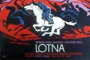
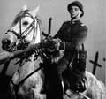

reżyseria: Andrzej Wajda, Janusz Morgenstern
scenariusz: Andrzej Wajda, Wojciech Żukrowski
zdjęcia: Jerzy Lipman
muzyka: Tadeusz Baird
scenografia: Roman Wołyniec
występują: Jerzy Pichelski (Chodakiewicz), Adam Pawlikowski (Wodnicki), Jerzy Moes (Grabowski) Bożena Kurowska (Ewa) i inni
produkcja: ZRF "Kadr", Warszawa
Tematyka polskiego września ukazana z innej - bardzo kontrowersyjnej w swoim czasie strony. Film przedstawia losy szwadronu kawalerii - swoistego przemijającego symbolu historii narodowej. Ułani przybywają do pewnego dworku, odpoczywają - tytułowa klacz - Lotna zostaje podarowana rotmistrzowi na służbę w polskim wojsku.
Losy Lotnej ukazane są na tle polskiej pięknej jesieni, wiejskich pejzaży, a z drugiej strony przetaczającej się gdzieś obok wojennej machiny wraz jej nieodłącznymi atrybutami - czołgami i samolotami, wybuchami, krwią i setkami żołnierzy. W filmie jest scena, która weszła do historii polskiego kina - szarża ułańska na koniach i z szablami na niemieckie czołgi, rotmistrz ginie, a Lotną zajmuje się Jerzy.
 Film jest bolesnym pożegnaniem z polską romantyczną tradycją wojny przy użyciu koni, szabli i lanc. W końcowej scenie Lotna ginie zastrzelona i następuje symboliczne przełamanie ułańskiej szabli przez ocalałego kawalerzystę. Piękny i wzruszający film o tradycji, jej znaczeniu w świadomości narodowej. W latach 50-tych wywołał dyskusję o polskim wrześniu 1939 r.
Film jest bolesnym pożegnaniem z polską romantyczną tradycją wojny przy użyciu koni, szabli i lanc. W końcowej scenie Lotna ginie zastrzelona i następuje symboliczne przełamanie ułańskiej szabli przez ocalałego kawalerzystę. Piękny i wzruszający film o tradycji, jej znaczeniu w świadomości narodowej. W latach 50-tych wywołał dyskusję o polskim wrześniu 1939 r.
Andrzej Wajda i Wojciech Żukrowski jako autorzy scenariusza potraktowali pierwowzór literacki filmu bardzo umownie. "Nie traktuję tego filmu jako rozrachunku z przeszłością. Pragnę jedynie wzruszyć widzów, pokazać im zderzenie wojny z jesienią, tą najpiękniejszą u nas porą roku, gdy ludzie zbierają plony swej pracy. I chciałbym tym filmem pożegnać piękną narodową tradycję" - mówił Andrzej Wajda.

Szwadron kawalerii jest symbolem świata, który choć już odszedł, przetrwał w świadomości narodowej. Grupka bohaterów mimo wojny i nieubłaganie zbliżającego się końca pewnej, romantycznej w gruncie rzeczy epoki tworzy odrębny, zamknięty świat. Historia zdaje się toczyć gdzieś z boku. W warstwie fabularnej film składa sie z pięciu sekwencji, tak przez samego reżysera opisanych - "Pierwsza, to prezentacja szwadronu w jesiennym plenerze i przybycie kawalerzystów do pałacu. Lotna zostaje przekazana rotmistrzowi przez właściciela miejscowych włości. Sekwencja druga przedstawia popas w dworku szlacheckim i pobliskiej wsi, trzecia zawiera osławioną szarżę na czołgi, śmierć rotmistrza, powrót do wsi, ślub podchorążego Jerzego z nauczycielką Ewą. Sekwencja następna obejmuje marszrutę szwadronu przez zatłoczone drogi, popas w lesie, bomardowanie, śmierć Jerzego. Sekwencja ostatnia pełni wyraˇnie funkcję symbolu - śmierć Lotnej i złamanie szabli przed żołnierską tułaczką przez jednego z ocalałych ułanów szwadronu."